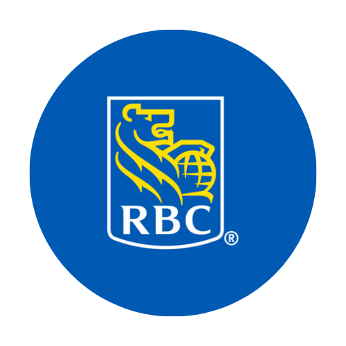

Capstone: RBC ETL Pipeline
Built a Python-based ETL pipeline using Snowflake and Power BI to automate insights delivery for RBC.
Data Analyst skilled in Python, SQL, and BI tools, with 3+ years' experience turning complex data into actionable insights across healthcare, government, and tech.
Business Technology Management Graduate from Toronto Metropolitan University (Dean’s List, Co-op Program) with over 3 years of experience in healthcare, government, and tech. I’ve built Python automation tools, SQL-integrated dashboards, and end-to-end data pipelines that support decision-making and cut manual work. I enjoy leading projects, presenting insights, and turning messy data into clear, actionable outcomes. Ever curious, I am always looking for ways to improve my analytical skills and create a meaningful impact through my work.
Selected works showcasing my skills in data analytics, automation, and visualization.
Built a Python-based ETL pipeline using Snowflake and Power BI to automate insights delivery for RBC.

Designed a personal finance tool using SQL, Tableau, and Python to support beginner investors.
Mapped rent increases and gentrification trends using geospatial data, SQL, and Python.

Built a Power BI dashboard analyzing public health access and disparities using open healthcare data.
Data Analyst with 3+ years of experience using Python, SQL, and BI tools to automate workflows, enhance data quality, and deliver actionable insights across healthcare, government, and tech sectors.
Toronto Metropolitan University — Bachelor of Commerce, Business Technology Management
Dean’s List (2020–2023) • Co-op Program
Data Analyst — IT Turnkey Solutions (Sep 2024 – Present)
Data Analyst Intern — Ontario Public Service (Apr 2024 – Aug 2024)
Business-IT Analyst Intern — Verto Health (Apr 2023 – Dec 2023)
Data Analyst Intern — Johnson & Johnson (Apr 2022 – Jan 2023)
A glimpse into what I enjoy doing outside of work and projects.

I am an avid video game developer using Unity for to create levels, AI behaviour, level design, and graphics.
I love 3D printing useful everyday tools or custom parts for robotics, Raspberry Pi projects, and small machines, bringing digital ideas to life with functional design.